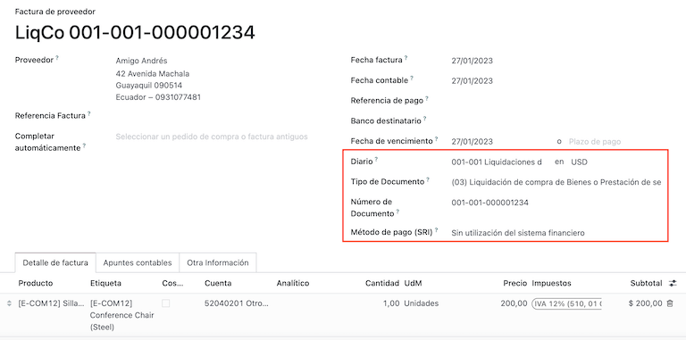

ประเทศเอกวาดอร์¶
แนะนำ¶
ด้วยการประยุกต์ใช้สำหรับประเทศเอกวาดอร์ คุณสามารถสร้างเอกสารอิเล็กทรอนิกส์ด้วย XML, เอกสารทางการเงิน พร้อมลายเซ็นอิเล็กทรอนิกส์ และการเชื่อมต่อโดยตรงกับหน่วยงานจัดเก็บภาษี SRI
เอกสารที่รองรับได้แก่ ใบแจ้งหนี้, ใบลดหนี้, ใบเพิ่มหนี้, การชำระบัญชีการซื้อ และการหัก ณ ที่จ่าย
การประยุกต์ใช้ยังรวมถึงระบบอัตโนมัติเพื่อให้คาดการณ์ภาษีหัก ณ ที่จ่ายที่จะใช้กับใบแจ้งหนี้การซื้อแต่ละรายการได้อย่างง่ายดาย
คำศัพท์¶
ต่อไปนี้เป็นคำศัพท์บางส่วนที่จำเป็นสำหรับการประยุกต์ใช้สำหรับประเทศเอกวาดอร์:
SRI: หมายถึง Servicio de Rentas Internas ซึ่งเป็นองค์กรรัฐบาลที่บังคับใช้การจ่ายภาษีในประเทศเอกวาดอร์
EDI: ย่อมาจาก Electronic Data Interchange ซึ่งหมายถึงการส่งเอกสารอิเล็กทรอนิกส์
RIMPE: ย่อมาจาก Regimen Simplificado para Emprendedores y Negocios ซึ่งเป็นประเภทผู้เสียภาษีที่มีคุณสมบัติเหมาะสมสำหรับ SRI
การกำหนดค่า¶
การติดตั้งโมดูล¶
ติดตั้ง โมดูลต่อไปนี้เพื่อรับฟีเจอร์ทั้งหมดของการประยุกต์ใช้สำหรับประเทศเอกวาดอร์:
ชื่อ |
ชื่อทางเทคนิค |
คำอธิบาย |
|---|---|---|
ประเทศเอกวาดอร์ - ระบบบัญชี |
|
ค่าเริ่มต้น แพ็คเกจการประยุกต์ใช้ทางการเงิน เพิ่มคุณลักษณะทางบัญชีสำหรับการประยุกต์ใช้สำหรับประเทศเอกวาดอร์ ซึ่งแสดงถึงการกำหนดค่าขั้นต่ำที่จำเป็นสำหรับบริษัทในการดำเนินธุรกิจในประเทศเอกวาดอร์ตามแนวทางที่กำหนดโดย SRI. การติดตั้งโมดูลจะโหลดโดยอัตโนมัติ: ผังบัญชี ภาษี ประเภทเอกสาร ประเภทการสนับสนุนด้านภาษี นอกจากนี้ การสร้างแบบฟอร์ม 103 และ 104 จะเป็นไปโดยอัตโนมัติ |
EDI ระบบบัญชีของประเทศเอกวาดอร์ |
|
รวมข้อกำหนดด้านเทคนิคและการทำงานทั้งหมดเพื่อสร้างและตรวจสอบ เอกสารอิเล็กทรอนิกส์ ตามเอกสารทางเทคนิคที่เผยแพร่โดย SRI เอกสารที่ได้รับอนุญาตได้แก่: ใบแจ้งหนี้, ใบลดหนี้, ใบเพิ่มหนี้, การหักภาษี ณ ที่จ่าย และการชำระบัญชีการซื้อ |
รายงานการบัญชีของประเทศเอกวาดอร์ |
|
รวมข้อกำหนดด้านเทคนิคและการทำงานทั้งหมดเพื่อสร้างแบบฟอร์ม 103 และ 104 |
ประเทศเอกวาดอร์ - รายงาน ATS |
|
รวมข้อกำหนดด้านเทคนิคและการทำงานทั้งหมดเพื่อสร้างไฟล์ XML รายงาน ATS ที่พร้อมสำหรับการอัปโหลดไปยัง DIMM Formularios |
เว็บไซต์ประเทศเอกวาดอร์ |
|
รวมข้อกำหนดด้านเทคนิคและการทำงานทั้งหมดเพื่อสร้างใบแจ้งหนี้อิเล็กทรอนิกส์อัตโนมัติจากการขายบนเว็บไซต์ |
ระบบขายหน้าร้านประเทศเอกวาดอร์ |
|
รวมถึงข้อกำหนดด้านเทคนิคและฟังก์ชันทั้งหมดเพื่อสร้างใบแจ้งหนี้อิเล็กทรอนิกส์อัตโนมัติจากการขาย POS |
Note
เมื่อคุณติดตั้งฐานข้อมูลตั้งแต่เริ่มต้น โดยเลือก ประเทศเอกวาดอร์ เป็นประเทศ Odoo จะติดตั้งโมดูลพื้นฐาน ประเทศเอกวาดอร์ - ระบบบัญชี โดยอัตโนมัติ
กำหนดค่าบริษัทของคุณ¶
หากต้องการกำหนดค่าข้อมูลบริษัทของคุณ ให้ไปที่แอป รายชื่อผูติดต่อ และค้นหาชื่อที่กำหนดให้กับบริษัทของคุณหรือเปิดใช้งาน โหมดนักพัฒนา และไปที่ จากนั้นแก้ไข ติดต่อเพื่อกำหนดค่าข้อมูลต่อไปนี้:
ตรวจสอบตัวเลือก บริษัท ที่ด้านบน
ชื่อ
ที่อยู่
หมายเลขประจำตัว
ประเภทผู้เสียภาษี
โทรศัพท์
อีเมล
อัปโหลดโลโก้บริษัทและบันทึก

เอกสารอิเล็กทรอนิกส์¶
หากต้องการอัปโหลดข้อมูลของคุณสำหรับเอกสารอิเล็กทรอนิกส์ ให้ไปที่ และค้นหา การประยุกต์ใช้สำหรับประเทศเอกวาดอร์
กำหนดค่าข้อมูลถัดไป:
ชื่อตามกฎหมายของบริษัท
ใช้เซิร์ฟเวอร์ที่ใช้งานจริง: ทำเครื่องหมายที่ช่องทำเครื่องหมายว่าบริษัทของคุณกำลังจะจัดทำเอกสารอิเล็กทรอนิกส์ในสภาพแวดล้อมการใช้งานจริงหรือไม่ หากคุณต้องการใช้สภาพแวดล้อมการทดสอบสำหรับเอกสารอิเล็กทรอนิกส์ ให้ยกเลิกการเลือกช่องทำเครื่องหมาย
การปกครอง: เลือกว่าบริษัทของคุณอยู่ใน General Regular หรือมีคุณสมบัติเป็น RIMPE
บังคับให้เก็บสมุดบัญชี: ทำเครื่องหมายในช่องหากบริษัทของคุณมีเงื่อนไขนี้
ภาษีเริ่มต้นสำหรับการหัก ณ ที่จ่าย
ปัญหาการหัก ณ ที่จ่าย: ทำเครื่องหมายที่ช่องทำเครื่องหมายว่าบริษัทของคุณกำลังจะทำการหัก ณ ที่จ่ายทางอิเล็กทรอนิกส์หรือไม่
ภาษีหัก ณ ที่จ่ายของสินค้า: ใส่รหัสหัก ณ ที่จ่ายเมื่อคุณซื้อสินค้า
ภาษีหัก ณ ที่จ่ายของบริการ: ใส่รหัสหัก ณ ที่จ่ายเมื่อคุณซื้อบริการ
ภาษีหัก ณ ที่จ่ายของบัตรเครดิต: ใส่รหัสหัก ณ ที่จ่ายเมื่อคุณซื้อด้วยบัตรเครดิต
หมายเลขตัวแทนหักภาษี ณ ที่จ่าย: ใส่หมายเลขการแก้ปัญหาตัวแทนหักภาษี ณ ที่จ่ายของบริษัท หากใช้ได้กับบริษัทของคุณ
ไฟล์ใบรับรองอิเล็กทรอนิกส์: อัปโหลดใบรับรองอิเล็กทรอนิกส์และรหัสผ่าน จากนั้นบันทึก
หมายเลขผู้เสียภาษีพิเศษ: หากบริษัทของคุณมีคุณสมบัติเป็นผู้เสียภาษีพิเศษ ให้กรอกข้อมูลในช่องนี้ด้วยหมายเลขผู้เสียภาษีที่เกี่ยวข้อง

Note
เมื่อกำหนดค่าการหัก ณ ที่จ่ายในเมนูการกำหนดค่า การหัก ณ ที่จ่ายที่แนะนำเหล่านี้มีไว้สำหรับซัพพลายเออร์ในประเทศเท่านั้น เมื่อไม่มีการตั้งค่าการหัก ณ ที่จ่ายใน ประเภทผู้เสียภาษี นอกจากนี้ การตั้งค่าการหักภาษี ณ ที่จ่ายของบัตรเครดิตจะใช้เสมอเมื่อมีการใช้วิธีการชำระเงิน SRI ของบัตรเครดิตหรือเดบิต
การหักภาษี ณ ที่จ่าย¶
การกำหนดค่านี้ใช้เฉพาะเมื่อคุณมีคุณสมบัติเป็น ตัวแทนหัก ณ ที่จ่าย โดย SRI มิเช่นนั้นให้ข้ามขั้นตอนนี้ หากต้องการกำหนดค่าการหักภาษี ณ ที่จ่าย VAT ของคุณ ให้ไปที่
คุณต้องกำหนดค่าเปอร์เซ็นต์การหักภาษี ณ ที่จ่ายที่ใช้สำหรับผู้เสียภาษีแต่ละประเภท โดยระบุ การหักภาษี ณ ที่จ่ายสินค้า VAT และ การหักภาษี ณ ที่จ่ายบริการ VAT

Tip
ในกรณีที่ ประเภทผู้เสียภาษี เป็น RIMPE ให้กำหนดค่าเปอร์เซ็นต์ :guilabel:`กำไรหัก ณ ที่จ่าย' ด้วย
จุดเครื่องพิมพ์¶
หากต้องการกำหนดค่าจุดเครื่องพิมพ์ของคุณ ให้ไปที่
จำเป็นต้องกำหนดค่าจุดเครื่องพิมพ์สำหรับเอกสารอิเล็กทรอนิกส์แต่ละประเภทที่คุณต้องการ ตัวอย่างเช่น: ใบแจ้งหนี้ของลูกค้า, ใบลดหนี้ และใบเพิ่มหนี้
สำหรับจุดเครื่องพิมพ์แต่ละจุด คุณต้องกำหนดค่าข้อมูลต่อไปนี้:
ชื่อสมุดรายวัน: ในรูปแบบนี้
[บริษัทส่งออก]-[จุดส่งออก] [ประเภทเอกสาร], ตัวอย่างเช่น:001-001 เอกสารการขายประเภท: หมายถึงประเภทของสมุดรายวัน เลือก
การขายใช้เอกสาร?: ช่องทำเครื่องหมายนี้จะถูกทำเครื่องหมายโดยอัตโนมัติ ให้ทำเครื่องหมายไว้
บริษัทส่งออก: กำหนดค่าหมายเลขสถานประกอบการ
จุดส่งออก: กำหนดค่าจุดเครื่องพิมพ์
ที่อยู่การส่งออก: กำหนดค่าที่อยู่ของสถานประกอบการ
บัญชีรายได้เริ่มต้น: กำหนดค่าบัญชีรายได้เริ่มต้น
ลำดับใบลดหนี้เฉพาะ: ทำเครื่องหมายที่ช่องทำเครื่องหมายหาก ใบลดหนี้ ถูกสร้างขึ้นจากจุดเครื่องพิมพ์นี้ - สมุดรายวัน
รหัสย่อ: นี่คือรหัสเฉพาะสำหรับลำดับรายการทางบัญชี ป้อนรหัส 5 หลักที่ไม่ซ้ำกัน เช่น:
VT001
ใบกำกับสินค้าของลูกค้า ใบลดหนี้ และใบเพิ่มหนี้จำเป็นต้องใช้สมุดรายวันเดียวกันกับ จุดส่งออก และ จุดบริษัท ไม่ควรซ้ำกันในแต่ละสมุดรายวัน

Note
ในแท็บ การตั้งค่าขั้นสูง ให้เลือกช่องทำเครื่องหมาย การออกใบแจ้งหนี้อิเล็กทรอนิกส์ เพื่อเปิดใช้งานสำหรับประเทศเอกวาดอร์
การหัก ณ ที่จ่าย¶
ต้องกำหนดสมุดรายวันการหักภาษี ณ ที่จ่าย ไปที่ ซึ่งคุณต้องกำหนดค่าข้อมูลต่อไปนี้:
สมุดรายวัน: ในรูปแบบนี้
[บริษัทส่งออก]-[จุดส่งออก] [ประเภทเอกสาร], ตัวอย่างเช่น:001-001 การหัก ณ ที่จ่ายประเภท: หมายถึงประเภทของสมุดรายวัน เลือก 'เบ็ดเตล็ด'
ประเภทการหักภาษี ณ ที่จ่าย: กำหนดค่าการหักภาษี ณ ที่จ่ายการซื้อ
ใช้เอกสาร?: ช่องทำเครื่องหมายนี้จะถูกทำเครื่องหมายโดยอัตโนมัติ ให้ทำเครื่องหมายไว้
บริษัทส่งออก: กำหนดค่าหมายเลขสถานประกอบการ
จุดส่งออก: กำหนดค่าจุดเครื่องพิมพ์
ที่อยู่การส่งออก: กำหนดค่าที่อยู่ของสถานประกอบการ
บัญชีเริ่มต้น: กำหนดค่าบัญชีรายได้เริ่มต้น
รหัสย่อ: นี่คือรหัสเฉพาะสำหรับลำดับรายการทางบัญชี ป้อนรหัส 5 หลักที่ไม่ซ้ำกัน เช่น:
RT001

Note
ในแท็บ การตั้งค่าขั้นสูง ให้เลือกช่องทำเครื่องหมาย ใบแจ้งหนี้อิเล็กทรอนิกส์ เพื่อเปิดใช้งานการส่งใบแจ้งหนี้อิเล็กทรอนิกส์สำหรับการหักภาษี ณ ที่จ่าย
การชำระบัญชีการจัดซื้อ¶
เมื่อใช้การชำระบัญชีการซื้อ ต้องสร้างสมุดรายวันเฉพาะ ไปที่ และกำหนดค่าข้อมูลต่อไปนี้:
สมุดรายวัน: ในรูปแบบนี้
[บริษัทส่งออก]-[จุดส่งออก] [ประเภทเอกสาร], ตัวอย่างเช่น:001-001 การหัก ณ ที่จ่ายประเภท: หมายถึงประเภทของสมุดรายวัน เลือก 'เบ็ดเตล็ด'
การชำระบัญชีการจัดซื้อ: ทำเครื่องหมายในช่องเพื่อเปิดใช้งานการชำระบัญชีการซื้อ
ใช้เอกสาร?: ช่องทำเครื่องหมายนี้จะถูกทำเครื่องหมายโดยอัตโนมัติ ให้ทำเครื่องหมายไว้
บริษัทส่งออก: กำหนดค่าหมายเลขสถานประกอบการ
จุดส่งออก: กำหนดค่าจุดเครื่องพิมพ์
ที่อยู่การส่งออก: กำหนดค่าที่อยู่ของสถานประกอบการ
รหัสย่อ: นี่คือรหัสเฉพาะสำหรับลำดับรายการทางบัญชี ป้อนรหัส 5 หลักที่ไม่ซ้ำกัน เช่น:
RT001
Note
ในแท็บ การตั้งค่าขั้นสูง ให้เลือกช่องทำเครื่องหมาย ใบแจ้งหนี้อิเล็กทรอนิกส์ เพื่อเปิดใช้งานการส่งใบแจ้งหนี้อิเล็กทรอนิกส์สำหรับการหักภาษี ณ ที่จ่าย
กำหนดค่าข้อมูลหลัก¶
ผังบัญชี¶
ผังบัญชี ได้รับการติดตั้งตามค่าเริ่มต้น โดยเป็นส่วนหนึ่งของชุดข้อมูลที่รวมอยู่ในโมดูลการประยุกต์ใช้ บัญชีจะถูกแมปโดยอัตโนมัติในภาษี บัญชีเจ้าหนี้เริ่มต้น บัญชีเริ่มต้นลูกหนี้ได้
ผังบัญชีสำหรับประเทศเอกวาดอร์ขึ้นอยู่กับเวอร์ชันล่าสุดของ การกำกับดูแลของบริษัท ซึ่งจัดกลุ่มเป็นหลายประเภทและเข้ากันได้กับการบัญชี NIIF
คุณสามารถเพิ่มหรือลบบัญชีได้ตามความต้องการของบริษัท
สินค้า¶
นอกเหนือจากข้อมูลพื้นฐานในผลิตภัณฑ์ของคุณแล้ว คุณต้องเพิ่มการกำหนดค่ารหัสหัก ณ ที่จ่าย (ภาษี) ที่ใช้
ไปที่ ใต้แท็บ "การจัดซื้อ"

การติดต่อ¶
กำหนดค่าข้อมูลถัดไปเมื่อคุณสร้างรายชื่อผู้ติดต่อ:
ตรวจสอบตัวเลือก บริษัท ที่ด้านบนหากเป็นการติดต่อกับ RUC หรือตรวจสอบ รายบุคคล หากเป็นการติดต่อกับ cedula หรือหนังสือเดินทาง
ชื่อ
ที่อยู่: ถนน เป็นช่องที่ต้องกรอกเพื่อยืนยันใบแจ้งหนี้อิเล็กทรอนิกส์
หมายเลขประจำตัว: เลือกประเภทการระบุ
RUC,Cedulaหรือหนังสือเดินทางประเภทผู้เสียภาษี: เลือกประเภทผู้เสียภาษี SRI ของผู้ติดต่อ
โทรศัพท์
อีเมล

Note
ประเภทผู้เสียภาษี SRI มีอยู่ภายในการกำหนดค่าซึ่ง VAT และกำไรหัก ณ ที่จ่ายจะใช้เมื่อคุณใช้ผู้ติดต่อนี้ในใบเรียกเก็บเงินของผู้จำหน่าย และจากนั้น สร้างการหัก ณ ที่จ่ายจากที่นั่น
ตรวจสอบภาษีของคุณ¶
เนื่องจากเป็นส่วนหนึ่งของโมดูลการประยุกต์ใช้ ภาษีจะถูกสร้างขึ้นโดยอัตโนมัติด้วยการกำหนดค่าและบัญชีทางการเงินที่เกี่ยวข้อง

ตัวเลือกต่อไปนี้ได้รับการกำหนดค่าโดยอัตโนมัติ:
การสนับสนุนด้านภาษี: เพื่อกำหนดค่าเฉพาะในภาษี IVA เท่านั้น ตัวเลือกนี้มีประโยชน์เมื่อคุณลงทะเบียนการหักภาษี ณ ที่จ่ายสำหรับการซื้อ
รหัส ATS: เพื่อกำหนดค่าเฉพาะสำหรับรหัสหักภาษี ณ ที่จ่าย สิ่งสำคัญคือเมื่อคุณลงทะเบียนการหักภาษี ณ ที่จ่าย
ตารางภาษี: กำหนดค่ารหัสของแบบฟอร์ม 104 หากเป็นภาษี IVA และกำหนดค่ารหัสของแบบฟอร์ม 103 หากเป็นรหัสหัก ณ ที่จ่ายภาษีเงินได้
ชื่อภาษี:
สำหรับภาษี IVA ให้จัดรูปแบบชื่อเป็น:
IVA [เปอร์เซ็นต์] (104, [รหัสแบบฟอร์ม] [รหัสสนับสนุนภาษี] [ชื่อย่อการสนับสนุนภาษี])สำหรับรหัสหักภาษี ณ ที่จ่าย ให้จัดรูปแบบชื่อเป็น:
รหัส ATS [เปอร์เซ็นต์ของการหัก ณ ที่จ่าย] [ชื่อที่หัก ณ ที่จ่าย]
เมื่อติดตั้งโมดูลประเทศเอกวาดอร์แล้ว ภาษีทั่วไปส่วนใหญ่จะได้รับการกำหนดค่าโดยอัตโนมัติ หากคุณต้องการสร้างภาษีเพิ่มเติม คุณสามารถทำได้ โดยคุณจะต้องยึดตามการกำหนดค่าภาษีที่มีอยู่ด้วยตนเอง

ตรวจสอบประเภทเอกสารของคุณ¶
ธุรกรรมทางบัญชีบางอย่าง เช่น ใบแจ้งหนี้ของลูกค้า และ ใบเรียกเก็บเงินของผู้จำหน่าย ได้รับการจำแนกตามประเภทเอกสาร สิ่งเหล่านี้ถูกกำหนดโดยหน่วยงานการคลังของรัฐบาล ในกรณีนี้คือ SRI
เอกสารแต่ละประเภทสามารถมีลำดับที่ไม่ซ้ำกันสำหรับแต่ละสมุดรายวันที่ได้รับการมอบหมาย ในฐานะที่เป็นส่วนหนึ่งของการประยุกต์ใช้ ประเภทเอกสารจะรวมถึงประเทศที่เอกสารนั้นมีผลบังคับใช้ ข้อมูลจะถูกสร้างขึ้นโดยอัตโนมัติเมื่อมีการติดตั้งโมดูลการประยุกต์ใช้
ข้อมูลที่จำเป็นสำหรับประเภทเอกสารจะถูกรวมไว้ตามค่าเริ่มต้น ดังนั้นผู้ใช้จึงไม่จำเป็นต้องกรอกข้อมูลใดๆ ในนั้น

ขั้นตอนการทำงาน¶
เมื่อคุณกำหนดค่าฐานข้อมูลแล้ว คุณสามารถลงทะเบียนเอกสารของคุณได้
เอกสารการขาย¶
ใบแจ้งหนี้ของลูกค้า¶
ใบแจ้งหนี้ของลูกค้า เป็นเอกสารอิเล็กทรอนิกส์ที่เมื่อตรวจสอบแล้วจะถูกส่งไปยัง SRI สามารถสร้างเอกสารเหล่านี้ได้จากใบสั่งขายของคุณหรือด้วยตนเอง จะต้องมีข้อมูลต่อไปนี้:
ลูกค้า: พิมพ์ข้อมูลของลูกค้า
สมุดรายวัน: เลือกตัวเลือกที่ตรงกับจุดเครื่องพิมพ์สำหรับใบแจ้งหนี้ของลูกค้า
ประเภทเอกสาร: พิมพ์ประเภทเอกสารในรูปแบบนี้
(01) ใบแจ้งหนี้วิธีการชำระเงิน (SRI): เลือกวิธีการชำระเงินตามใบแจ้งหนี้
สินค้า: ระบุสินค้าพร้อมภาษีที่ถูกต้อง

ใบลดหนี้ของลูกค้า¶
ใบลดหนี้ของลูกค้า เป็นเอกสารอิเล็กทรอนิกส์ที่เมื่อตรวจสอบแล้ว จะถูกส่งไปยัง SRI จำเป็นต้องมีใบแจ้งหนี้ที่ได้รับการตรวจสอบ (ผ่านรายการแล้ว) เพื่อลงทะเบียนใบลดหนี้ ในใบแจ้งหนี้จะมีปุ่มชื่อ ใบลดหนี้ คลิกที่ปุ่มนี้เพื่อไปที่แบบฟอร์ม สร้างใบลดหนี้ จากนั้นกรอกข้อมูลต่อไปนี้:
วิธีการให้เครดิต: เลือกประเภทวิธีการให้เครดิต
การคืนเงินบางส่วน: ใช้ตัวเลือกนี้เมื่อคุณต้องการพิมพ์เอกสารจำนวนแรกและเป็นใบลดหนี้บางส่วน
คืนเงินเต็มจำนวน: ใช้ตัวเลือกนี้หากใบลดหนี้ใช้สำหรับใบแจ้งหนี้ทั้งหมด และคุณต้องการให้ใบลดหนี้ได้รับการตรวจสอบอัตโนมัติและกระทบยอดกับใบแจ้งหนี้
การคืนเงินเต็มจำนวนและใบแจ้งหนี้ฉบับร่างใหม่: ใช้ตัวเลือกนี้หากใบลดหนี้ใช้สำหรับใบแจ้งหนี้ทั้งหมด และคุณต้องการให้ใบลดหนี้ได้รับการตรวจสอบอัตโนมัติและกระทบยอดกับใบแจ้งหนี้ และสร้างใบแจ้งหนี้ฉบับร่างใหม่โดยอัตโนมัติ
เหตุผล: พิมพ์เหตุผลสำหรับใบลดหนี้
วันที่ย้อนกลับ: เลือกตัวเลือก เฉพาะ
วันที่กลับรายการ: พิมพ์วันที่
ใช้สมุดรายวันเฉพาะ: เลือกจุดเครื่องพิมพ์สำหรับใบลดหนี้ของคุณ หรือปล่อยว่างไว้หากคุณต้องการใช้สมุดรายวันเดียวกันกับใบแจ้งหนี้ต้นฉบับ
เมื่อตรวจสอบแล้ว คุณสามารถคลิกที่ปุ่ม ย้อนกลับ
เมื่อใช้ตัวเลือก คืนเงินบางส่วน คุณสามารถเปลี่ยนจำนวนใบลดหนี้และตรวจสอบความถูกต้องได้ ก่อนที่จะตรวจสอบใบลดหนี้ ให้ตรวจทานข้อมูลต่อไปนี้:
ลูกค้า: พิมพ์ข้อมูลของลูกค้า
สมุดรายวัน: เลือกจุดเครื่องพิมพ์สำหรับใบลดหนี้ของลูกค้า
ประเภทเอกสาร: นี่คือประเภทเอกสาร
(04) ใบลดหนี้ผลิตภัณฑ์: ต้องระบุสินค้าพร้อมภาษีที่ถูกต้อง

ใบเพิ่มหนี้ลูกค้า¶
ใบเพิ่มหนี้ของลูกค้า เป็นเอกสารอิเล็กทรอนิกส์ที่เมื่อตรวจสอบแล้ว จะถูกส่งไปยัง SRI จำเป็นต้องมีใบแจ้งหนี้ที่ได้รับการตรวจสอบ (ผ่านรายการแล้ว) เพื่อลงทะเบียนใบเพิ่มหนี้ ในใบแจ้งหนี้จะมีปุ่มชื่อ ใบเพิ่มหนี้ คลิกที่ปุ่มนี้เพื่อไปที่แบบฟอร์ม สร้างใบเพิ่มหนี้ จากนั้นกรอกข้อมูลต่อไปนี้:
เหตุผล: พิมพ์เหตุผลของใบเพิ่มหนี้
วันที่ใบเพิ่มหนี้: เลือกตัวเลือก เฉพาะ
คัดลอกรายการ: เลือกตัวเลือกนี้หากคุณต้องการลงทะเบียนใบเพิ่มหนี้ด้วยบรรทัดใบแจ้งหนี้เดียวกัน
ใช้สมุดรายวันเฉพาะ: เลือกจุดเครื่องพิมพ์สำหรับใบลดหนี้ของคุณ หรือปล่อยว่างไว้หากคุณต้องการใช้สมุดรายวันเดียวกันกับใบแจ้งหนี้ต้นฉบับ
เมื่อตรวจสอบแล้ว คุณสามารถคลิกที่ปุ่ม สร้างใบเพิ่มหนี้

คุณสามารถเปลี่ยนแปลงยอดเงินใบเพิ่มหนี้และสามารถตรวจสอบได้ ก่อนที่จะตรวจสอบใบเพิ่มหนี้ ให้ตรวจทานข้อมูลต่อไปนี้:
ลูกค้า: พิมพ์ข้อมูลของลูกค้า
สมุดรายวัน: เลือกจุดเครื่องพิมพ์สำหรับใบลดหนี้ของลูกค้า
ประเภทเอกสาร: นี่คือประเภทเอกสาร
(05) ใบเพิ่มหนี้ผลิตภัณฑ์: ต้องระบุสินค้าพร้อมภาษีที่ถูกต้อง

การหัก ณ ที่จ่ายของลูกค้า¶
การหักภาษี ณ ที่จ่ายของลูกค้า เป็นเอกสารที่ไม่ใช่อิเล็กทรอนิกส์สำหรับบริษัทของคุณ เอกสารนี้ออกโดยลูกค้าเพื่อใช้การหักภาษี ณ ที่จ่ายกับการขาย
จำเป็นต้องมีใบแจ้งหนี้ที่ได้รับการตรวจสอบ (ผ่านรายการ) เพื่อลงทะเบียนการหัก ณ ที่จ่ายของลูกค้า ในใบแจ้งหนี้จะมีปุ่มชื่อ เพิ่มการหักภาษี ณ ที่จ่าย คลิกที่ปุ่มนี้เพื่อไปที่แบบฟอร์ม :guilabel:`การหักภาษี ณ ที่จ่ายของลูกค้า จากนั้นกรอกข้อมูลต่อไปนี้:
หมายเลขเอกสาร: พิมพ์หมายเลขหัก ณ ที่จ่าย
รายการหัก ณ ที่จ่าย: เลือกภาษีที่ลูกค้าหัก ณ ที่จ่าย
ก่อนที่จะตรวจสอบความถูกต้องของการหัก ณ ที่จ่าย ให้ตรวจสอบว่าจำนวนเงินสำหรับภาษีแต่ละรายการเหมือนกันกับเอกสารต้นฉบับหรือไม่

เอกสารการจัดซื้อ¶
บิลผู้ขาย¶
ใบเรียกเก็บเงินของผู้ขาย เป็นเอกสารที่ไม่ใช่อิเล็กทรอนิกส์สำหรับบริษัทของคุณ เอกสารนี้จะออกโดยผู้ขายของคุณเมื่อบริษัทของคุณทำการซื้อ
สามารถสร้างใบเรียกเก็บเงินได้จากใบสั่งซื้อหรือด้วยตนเอง โดยต้องมีข้อมูลต่อไปนี้:
ผู้ขาย: พิมพ์ข้อมูลของผู้ขาย
วันที่เรียกเก็บเงิน: เลือกวันที่ของใบแจ้งหนี้
สมุดรายวัน: เป็นสมุดรายวันสำหรับใบเรียกเก็บเงินของผู้ขาย
ประเภทเอกสาร: นี่คือประเภทเอกสาร
(01) ใบแจ้งหนี้หมายเลขเอกสาร: พิมพ์หมายเลขเอกสาร
วิธีการชำระเงิน (SRI): เลือกวิธีการชำระเงินตามใบแจ้งหนี้
สินค้า: ระบุสินค้าพร้อมภาษีที่ถูกต้อง
Important
เมื่อสร้างการหัก ณ ที่จ่ายในการจัดซื้อ ให้ตรวจสอบว่าฐาน (จำนวนเงินฐาน) ถูกต้อง หากคุณต้องการแก้ไขจำนวนภาษีใน ใบเรียกเก็บเงินของผู้ขาย ให้คลิกปุ่ม แก้ไข หรือจากแท็บ รายการสมุดรายวัน ให้คลิกปุ่ม แก้ไข และตั้งค่าการปรับเปลี่ยนไปยังตำแหน่งที่คุณต้องการ
การชำระบัญชีการจัดซื้อ¶
การชำระบัญชีการจัดซื้อ เป็นเอกสารอิเล็กทรอนิกส์ที่เมื่อได้รับการตรวจสอบแล้วจะถูกส่งไปยัง SRI
บริษัทจะออกเอกสารอิเล็กทรอนิกส์ประเภทนี้เมื่อมีการซื้อ และผู้จำหน่ายไม่ได้ออกใบแจ้งหนี้ เนื่องจากกรณีต่อไปนี้อย่างน้อยหนึ่งกรณี:
ให้บริการโดยผู้ที่ไม่ได้มีถิ่นที่อยู่ในประเทศเอกวาดอร์
บริการที่จัดทำโดยบริษัทต่างประเทศที่ไม่มีถิ่นที่อยู่หรือสถานประกอบการในประเทศเอกวาดอร์
การซื้อสินค้าหรือบริการจากบุคคลธรรมดาที่ไม่ได้ลงทะเบียนกับ RUC ซึ่งเนื่องจากระดับวัฒนธรรมหรือความแข็งแกร่งของพวกเขาจึงไม่สามารถออกใบเสร็จรับเงินการขายหรือใบแจ้งหนี้ของลูกค้าได้
การชำระเงินคืนสำหรับการซื้อสินค้าหรือบริการให้กับพนักงานในความสัมพันธ์ที่ต้องพึ่งพา (พนักงานเต็มเวลา)
บริการที่จัดให้โดยสมาชิกของหน่วยงานวิทยาลัยเพื่อการปฏิบัติหน้าที่ของพวกเขา
เอกสารอิเล็กทรอนิกส์ประเภทเหล่านี้สามารถสร้างได้จาก ใบสั่งซื้อ หรือด้วยตนเองจาก :guilabel:`มุมมองแบบฟอร์มใบเรียกเก็บเงินของผู้ขาย จะต้องมีข้อมูลต่อไปนี้:
ผู้ขาย: พิมพ์ข้อมูลของผู้ขาย
สมุดรายวัน: เลือกสมุดรายวันสำหรับ การชำระบัญชีการจัดซื้อ ด้วยจุดเครื่องพิมพ์ที่ถูกต้อง
ประเภทเอกสาร: นี่คือประเภทเอกสาร
(03) การชำระบัญชีการจัดซื้อหมายเลขเอกสาร: พิมพ์หมายเลขเอกสาร (ลำดับ) คุณจะต้องทำเพียงครั้งเดียว จากนั้นลำดับจะถูกกำหนดโดยอัตโนมัติสำหรับเอกสารถัดไป
วิธีการชำระเงิน (SRI): เลือกวิธีการชำระเงินตามใบแจ้งหนี้
สินค้า: ระบุสินค้าพร้อมภาษีที่ถูกต้อง
เมื่อคุณตรวจสอบข้อมูลแล้ว คุณสามารถตรวจสอบ การชำระบัญชีการจัดซื้อ ได้
การหักภาษี ณ ที่จ่ายการซื้อ¶
การหักภาษี ณ ที่จ่ายการซื้อ เป็นเอกสารอิเล็กทรอนิกส์ที่เมื่อได้รับการตรวจสอบแล้วจะถูกส่งไปยัง SRI
จำเป็นต้องมีใบแจ้งหนี้ในสถานะที่ได้รับการตรวจสอบแล้วจึงจะสามารถลงทะเบียน การลดหย่อนการจัดซื้อ ได้ ในใบแจ้งหนี้ จะมีปุ่มชื่อ เพิ่มการหัก ณ ที่จ่าย คลิกที่ปุ่มนี้เพื่อไปที่แบบฟอร์ม การหัก ณ ที่จ่าย จากนั้นกรอกข้อมูลต่อไปนี้:
หมายเลขเอกสาร: พิมพ์หมายเลขเอกสาร (ลำดับ) คุณจะต้องทำเพียงครั้งเดียว จากนั้นลำดับจะถูกกำหนดโดยอัตโนมัติสำหรับเอกสารถัดไป
รายการหัก ณ ที่จ่าย: ภาษีจะแสดงขึ้นโดยอัตโนมัติตามการกำหนดค่าของผลิตภัณฑ์และผู้ขาย คุณควรตรวจสอบว่าภาษีและการสนับสนุนด้านภาษีถูกต้องหรือไม่ และหากไม่ถูกต้อง คุณสามารถแก้ไขและเลือกภาษีที่ถูกต้องและการสนับสนุนด้านภาษี
เมื่อคุณตรวจสอบข้อมูลแล้ว คุณสามารถตรวจสอบ การหักภาษี ณ ที่จ่าย ได้

Note
คุณไม่สามารถเปลี่ยนการสนับสนุนด้านภาษีสำหรับภาษีที่ไม่รวมอยู่ในการกำหนดค่าภาษีที่ใช้ใน ใบเรียกเก็บเงินผู้ขาย โดยไปที่ภาษีที่ใช้กับ ใบเรียกเก็บเงินผู้ขาย และเปลี่ยน การสนับสนุนด้านภาษี ที่นั่น
ภาษีหัก ณ ที่จ่ายสามารถแบ่งออกเป็นสองรายการขึ้นไป ซึ่งจะขึ้นอยู่กับว่ามีการใช้เปอร์เซ็นต์การหักภาษี ณ ที่จ่ายตั้งแต่สองรายการขึ้นไปหรือไม่
Example
ระบบแนะนำให้หักภาษี ณ ที่จ่าย 30% พร้อมการสนับสนุนภาษี 01 คุณสามารถเพิ่มภาษีหัก ณ ที่จ่าย 70% ของคุณในบรรทัดใหม่ด้วยการสนับสนุนภาษีเดียวกัน ระบบจะอนุญาตให้คุณตราบใดที่ผลรวมของฐานตรงกับผลรวมจาก ใบเรียกเก็บเงินผู้ขาย
อีคอมเมิร์ซ¶
โมดูลรายงาน ATS เปิดใช้งานสิ่งต่อไปนี้:
เลือกวิธีการชำระเงิน SRI ในการกำหนดค่าวิธีการชำระเงินแต่ละวิธี
ลูกค้าสามารถป้อนประเภทการระบุตัวตนและหมายเลขประจำตัวด้วยตนเองในระหว่างกระบวนการชำระเงินอีคอมเมิร์ซ
สร้างใบแจ้งหนี้อิเล็กทรอนิกส์ที่ถูกต้องสำหรับประเทศเอกวาดอร์โดยอัตโนมัติเมื่อสิ้นสุดกระบวนการชำระเงิน
การกำหนดค่า¶
เว็บไซต์¶
หากต้องการสร้างใบแจ้งหนี้หลังจากขั้นตอนการชำระเงิน ให้ไปที่ และเปิดใช้งานตัวเลือก ใบแจ้งหนี้อัตโนมัติ ที่พบในส่วน การออกใบแจ้งหนี้
Tip
เทมเพลตอีเมลของใบแจ้งหนี้สามารถแก้ไขได้จากฟิลด์ เทมเพลตอีเมลใบแจ้งหนี้ ใต้ตัวเลือก ใบแจ้งหนี้อัตโนมัติ
Important
สมุดรายวันการขายที่ใช้สำหรับการออกใบแจ้งหนี้เป็นรายการแรกในลำดับลำดับความสำคัญในเมนู สมุดรายวัน
ผู้ให้บริการชำระเงิน¶
หากต้องการเปิดใช้งานผู้ให้บริการชำระเงินที่ควรใช้เพื่อบันทึกการชำระเงินอีคอมเมิร์ซ ให้ไปที่ ใต้หัวข้อ :guilabel: เปิดใช้งานการชำระเงิน จากที่นี่ คุณสามารถกำหนดค่าผู้ให้บริการการชำระเงินแต่ละรายได้โดยการเลือกบันทึกผู้ให้บริการ โปรดดูข้อมูลเพิ่มเติมในเอกสารประกอบ ผู้ให้บริการการชำระเงิน
วิธีการชำระเงิน¶
หากต้องการเปิดใช้งานวิธีการชำระเงินตั้งแต่หนึ่งวิธีขึ้นไปสำหรับผู้ให้บริการชำระเงิน ให้คลิก → เปิดใช้งานวิธีการชำระเงิน ภายในแท็บ การกำหนดค่า ของผู้ให้บริการแต่ละราย
เมื่อกำหนดค่าวิธีการชำระเงิน จำเป็น ต้องตั้งค่า วิธีการชำระเงิน SRI สำหรับแต่ละวิธี ช่องนี้จะแสดงขึ้นหลังจากที่คุณสร้างและบันทึกวิธีการชำระเงินเป็นครั้งแรก
Note
การเพิ่ม วิธีการชำระเงิน SRI เป็นสิ่งจำเป็นในการสร้างใบแจ้งหนี้อิเล็กทรอนิกส์จากการขายอีคอมเมิร์ซอย่างถูกต้อง เลือก วิธีการชำระเงิน เพื่อเข้าถึงเมนูการกำหนดค่าและช่อง
See also

ขั้นตอนการทำงานของอีคอมเมิร์ซ¶
ประเภทและหมายเลขประจำตัว¶
ลูกค้าที่ทำการซื้อจะมีตัวเลือกในการระบุประเภทและหมายเลขประจำตัวของพวกเขาในระหว่างขั้นตอนการชำระเงิน ข้อมูลนี้จำเป็นในการสร้างใบแจ้งหนี้อิเล็กทรอนิกส์อย่างถูกต้องหลังจากการชำระเงินเสร็จสิ้น

Note
การตรวจสอบจะดำเนินการเพื่อให้แน่ใจว่ากรอกข้อมูลในช่อง หมายเลขประจำตัว ให้ครบถ้วนและมีจำนวนหลักที่ถูกต้อง สำหรับการระบุตัวตน RUC ต้องใช้ 13 หลัก สำหรับ Cédula ต้องใช้ 9 หลัก
หลังจากเสร็จสิ้นกระบวนการชำระเงิน จะมีการสร้างใบแจ้งหนี้ที่ได้รับการยืนยัน ซึ่งพร้อมที่จะส่งด้วยตนเองหรือแบบอะซิงโครนัสไปยัง SRI
การออกใบแจ้งหนี้อิเล็กทรอนิกส์ขายหน้าร้าน¶
ตรวจสอบให้แน่ใจว่า โมดูลเอกวาดอร์สำหรับการขายหน้าร้าน (l10n_ec_edi_pos) ได้รับการ ติดตั้งแล้ว เพื่อเปิดใช้งานฟีเจอร์และการกำหนดค่าต่อไปนี้:
เลือกรูปแบบการชำระเงิน SRI ในการกำหนดค่ารูปแบบการชำระเงินแต่ละรูปแบบ
ป้อนประเภทการระบุตัวตนของลูกค้าและหมายเลขประจำตัวด้วยตนเองเมื่อสร้างผู้ติดต่อใหม่บน POS
สร้างใบแจ้งหนี้อิเล็กทรอนิกส์ที่ถูกต้องสำหรับประเทศเอกวาดอร์โดยอัตโนมัติเมื่อสิ้นสุดกระบวนการชำระเงิน
การกำหนดค่าวิธีการชำระเงิน¶
หากต้องการ สร้างวิธีการชำระเงินสำหรับ POS ให้ไปที่ จากนั้นตั้งค่า วิธีการชำระเงิน SRI ในแบบฟอร์มวิธีการชำระเงิน
ขั้นตอนการออกใบแจ้งหนี้¶
ประเภทและหมายเลขประจำตัว¶
แคชเชียร์ POS สามารถ สร้างผู้ติดต่อใหม่สำหรับลูกค้า ที่ร้องขอใบแจ้งหนี้จากเซสชัน POS ที่เปิดอยู่ได้
โมดูลเอกวาดอร์สำหรับการขายหน้าร้าน เพิ่มฟิลด์ใหม่ 2 ฟิลด์ลงในแบบฟอร์มสร้างข้อมูลติดต่อ: ประเภทการระบุตัวตน และ รหัสภาษี
Note
เนื่องจากความยาวของหมายเลขประจำตัวแตกต่างกันไปตามประเภทการระบุตัวตน Odoo จึงตรวจสอบฟิลด์ ID ภาษี โดยอัตโนมัติเมื่อบันทึกแบบฟอร์มติดต่อ หากต้องการตรวจสอบความยาวด้วยตนเองว่าถูกต้อง โปรดทราบว่าประเภท RUC และ พลเมือง ต้องใช้ตัวเลข 13 และ 10 หลักตามลำดับ
ใบแจ้งหนี้อิเล็กทรอนิกส์: ผู้บริโภคปลายทางที่ไม่ระบุตัวตน¶
เมื่อลูกค้าไม่ร้องขอใบแจ้งหนี้ทางอิเล็กทรอนิกส์สำหรับการซื้อสินค้า Odoo จะตั้งค่าลูกค้าเป็น ผู้บริโภคขั้นสุดท้าย โดยอัตโนมัติ และสร้างใบแจ้งหนี้ทางอิเล็กทรอนิกส์ให้อยู่แล้ว
Note
หากลูกค้าร้องขอใบลดหนี้เนื่องจากการคืนสินค้าประเภทนี้ ควรจัดทำใบลดหนี้โดยใช้ข้อมูลติดต่อจริงของลูกค้า ไม่สามารถสร้างใบลดหนี้ใน ผู้บริโภคขั้นสุดท้าย ได้ แต่สามารถจัดการ โดยตรงจากเซสชัน POS ได้
ใบแจ้งหนี้อิเล็กทรอนิกส์: ลูกค้าเฉพาะ¶
หากลูกค้าร้องขอใบแจ้งหนี้สำหรับการซื้อสินค้า สามารถเลือกหรือสร้างรายชื่อผู้ติดต่อพร้อมข้อมูลทางการเงินของลูกค้าได้ วิธีนี้จะช่วยให้มั่นใจได้ว่าใบแจ้งหนี้จะถูกสร้างขึ้นโดยมีรายละเอียดลูกค้าที่ถูกต้อง
Note
หากลูกค้าร้องขอบันทึกเครดิตเนื่องจากการส่งคืนสินค้าซื้อประเภทนี้ สามารถจัดการกระบวนการบันทึกเครดิตและการส่งคืนได้ โดยตรงจากเซสชัน POS
รายงานทางการเงิน¶
ในประเทศเอกวาดอร์ มีรายงานทางการเงินที่บริษัทนำเสนอต่อ SRI Odoo รองรับรายงานทางการเงินหลักสองฉบับที่บริษัทใช้: รายงาน 103 และ 104
หากต้องการรับรายงานเหล่านี้ ให้ไปที่แอป ระบบบัญชี และเลือก แล้วกรองตาม รายงานภาษี 103 หรือ รายงานภาษี 104
รายงาน 103¶
รายงานนี้มีข้อมูลการหักภาษีเงินได้ ณ ที่จ่ายในช่วงเวลาที่กำหนด โดยสามารถรายงานเป็นรายเดือนหรือรายครึ่งปีได้
คุณสามารถดูข้อมูลที่จำเป็นในการรายงาน ซึ่งรวมถึงฐานและจำนวนภาษี แต่ยังรวมรหัสภาษีไว้ในวงเล็บเพื่อรายงานไปยัง SRI

รายงาน 104¶
รายงานนี้มีข้อมูลเกี่ยวกับภาษี VAT และการหักภาษี ณ ที่จ่ายในช่วงเวลาที่กำหนด อาจเป็นรายเดือนหรือรายครึ่งปี
คุณสามารถดูข้อมูลที่จำเป็นในการรายงาน ซึ่งรวมถึงฐานและจำนวนภาษี แต่ยังรวมถึงรหัสภาษีในวงเล็บเพื่อรายงานไปยัง SRI

รายงาน ATS¶
ติดตั้ง โมดูล รายงาน ATS (l10n_ec_reports_ats) เพื่อเปิดใช้งานการดาวน์โหลดรายงาน ATS ในรูปแบบ XML
Note
โมดูล รายงาน ATS ของประเทศเอกวาดอร์ขึ้นอยู่กับการติดตั้งแอป ระบบบัญชี และ โมดูล EDI ของประเทศเอกวาดอร์ ก่อนหน้านี้
การกำหนดค่า¶
หากต้องการออกเอกสารอิเล็กทรอนิกส์ โปรดตรวจสอบให้แน่ใจว่าบริษัทของคุณได้รับการกำหนดค่าตามที่อธิบายไว้ในส่วน ใบแจ้งหนี้อิเล็กทรอนิกส์
ใน ATS เอกสารทุกฉบับที่สร้างใน Odoo (ใบแจ้งหนี้ ใบเรียกเก็บเงินของผู้ขาย การหักภาษี ณ ที่จ่ายจากการขายและการซื้อ ใบลดหนี้ และใบเพิ่มหนี้) จะถูกรวมไว้ด้วย
ใบเรียกเก็บเงินผู้ขาย¶
เมื่อสร้างใบเรียกเก็บเงินของผู้จำหน่าย จำเป็นต้องลงทะเบียนหมายเลขการอนุญาตจากใบแจ้งหนี้ที่ผู้จำหน่ายสร้างขึ้นสำหรับการซื้อ โดยไปที่ และเลือกใบเรียกเก็บเงิน จากนั้น ป้อนหมายเลขจากใบแจ้งหนี้ของผู้ขายในช่อง หมายเลขการอนุญาต
ใบลดหนี้และใบเพิ่มหนี้¶
เมื่อสร้างใบลดหนี้หรือใบเพิ่มหนี้ด้วยตนเองหรือผ่านการนำเข้า จำเป็นต้องเชื่อมโยงบันทึกนี้กับใบแจ้งหนี้การขายที่กำลังได้รับการแก้ไข
Note
อย่าลืมเพิ่มข้อมูลที่จำเป็นทั้งหมดลงในเอกสารก่อนที่จะดาวน์โหลดไฟล์ ATS ตัวอย่างเช่น เพิ่ม หมายเลขการอนุญาต และ วิธีการชำระเงิน SRI ลงในเอกสาร เมื่อจำเป็น
การสร้าง XML¶
หากต้องการสร้างรายงาน ATS ให้ไปที่ และเลือกช่วงเวลาสำหรับ ATS ที่ต้องการรายงาน จากนั้นคลิก ATS
ไฟล์ XML ที่ดาวน์โหลดพร้อมที่จะอัปโหลดไปยัง DIMM Formularios แล้ว

Note
เมื่อดาวน์โหลดรายงาน ATS Odoo จะสร้างป๊อปอัปคำเตือนเพื่อแจ้งเตือนผู้ใช้หากเอกสารมีข้อมูลสูญหายหรือไม่ถูกต้อง อย่างไรก็ตาม ผู้ใช้ยังสามารถดาวน์โหลดไฟล์ XML ได้